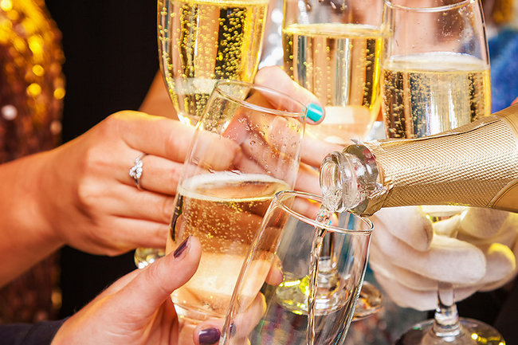

Каждый должен иметь какие-то дурные привычки, чтобы было от чего отказаться, если здоровье ухудшится.
Франклин П. Джонс
Итак, уважаемый читатель, у вас была возможность оценить свои взаимоотношения с алкоголем. Возможно, вы нашли у себя некоторые признаки алкоголизма, которые не укладываются в типичную картину заболевания, и решили, что алкоголизм у вас имеет доброкачественное течение. Если это действительно так, то у вас есть шанс самостоятельно бросить пить и научиться пить умеренно.
Раньше считалось, что больной алкоголизмом никогда не сможет перейти на умеренное употребление алкоголя. Но это относится только к типичному алкоголизму. Однако многие мои пациенты с доброкачественным вариантом алкоголизма приобрели способность пить умеренно.
Я не призываю вас к абсолютной трезвости против вашей воли, если вы сами этого ещё не хотите. Если у вас уже развернутая клиническая картина типичного алкоголизма, то уговаривать уже поздно. Если вы считаете, что ваше употребление алкоголя можно расценить как бытовое пьянство, то переход в болезнь можно предотвратить; вы сами способны остановиться, и это зависит только от вас.
Но если окружающие уже не раз упрекали вас за пьянство, а вы, несмотря ни на что, не находите у себя ни единого признака, свидетельствующего об алкоголизме, то хочу ещё раз напомнить вам об алкогольной анозогнозии. Отрицание болезни не означает, что этой болезни у вас нет. Не обманывайте самого себя – вы же не на приеме у нарколога, вы пока наедине с собой и никто лучше вас не знает все нюансы ваших взаимоотношений с алкоголем.
Пьянство – это цепь самоотверженных попыток отыскать утопшую в вине истину и оживить её искусственным дыханием перегара.
Виктор Кротов
Человека, у которого существует алкогольная анозогнозия, переубеждать бесполезно. Причем, чем больше стаж болезни, тем меньше шансов, что больной это признает. Я раскладывала "по полочкам" все симптомы, которые были у больного, рассказывала, как они называются и что они значат, из чего складывается постановка диагноза и многое другое, и даже при хорошем контакте с пациентом, когда он "из уважения" или просто не желая спорить, на словах соглашался со мной и давал согласие на лечение, – было ясно, что внутренней убежденности у него нет, и несмотря ни на что, он остался при своем мнении.
– Почему вы пьете водку?
– Чтобы утолить жажду.
– Но можно же пить "Фанту", "Пепси"…
– В моем возрасте уже поздно менять привычки…
Анекдот
Убедить можно только человека, который сам готов к этому, и у него уже существует осознание болезни или хотя бы предпосылки к этому, но он ещё не уверен и сомневается. Такой человек способен воспринять логические доводы, и даже если на словах в беседе с врачом он не признает себя больным, но наедине с собой может с этим согласиться.
Поэтому, если вопреки всем очевидным фактам вы по-прежнему не считаете себя больным алкоголизмом (а не только на словах отрицаете наличие болезни), – оставайтесь при своем убеждении, а дальше жизнь покажет, кто прав. Но только помните, что анозогнозия – это свидетельство далеко зашедшего заболевания, и долго ждать, кто именно прав – вы или окружающие, – вряд ли придется. У каждой болезни есть свои закономерности развития, и если она продолжает развиваться, исход можно точно предсказать, по крайней мере в отношении такого заболевания, как алкоголизм.
– Ванек, слышь, ученые таблетку изобрели: положишь на язык одной стороной – и пьяный. Положишь другой стороной – трезвый.
– Ух ты!
– Я вот только одного не пойму – зачем они к этой таблетке трезвую сторону присобачили?!
Анекдот
Возможно, прочитанное иногда вас раздражало. Как сказал один мой знакомый, взяв почитать одну из моих книг: "Не смог дочитать до конца – тут все про меня. Мне стало так тоскливо, что я решил, что мне про это лучше не знать, и выпил для успокоения." И хотя он сам признался, что в книге "все про него", – он до сих пор уверен, что не болен алкоголизмом, хотя с тех пор прошло четыре года, у него уже по утрам "сушняк и весь "букет" похмелья.
Выпьем за то, чтобы все твои удовольствия стали твоими привычками!
NN
Человек, требующий правды, подсознательно надеется услышать не всю правду, а только ту её часть, которая характеризует его положительно, а с тем, что показывает его в негативном свете, – соглашаться не желает. То есть, он ожидает не правды, а опровержения своих собственных сомнений.
Возможно, и вы надеялись, что не найдете здесь подтверждения собственным опасениям, и именно поэтому все сказанное стало вас раздражать.
Самое трудное для пьющего человека, из-за чего он не хочет обращаться к наркологу, – мысль о том, что в будущем, после наркологического лечения, он уже никогда не сможет выпить даже рюмку спиртного.
– Сфотографируй меня героем!
– Как это?
– А очень просто. Идем в пивняк, уставляем весь стол кружками с пенящимся пивом, посередине блюда с креветками, а я сижу, отвернувшись!
Анекдот
Алкоголь и все, что с ним связано, уже настолько прочно вошло в стереотип жизни, в психологию пьющего, что он даже не представляет себе, как будет без него обходиться, как будет общаться с прежними приятелями – они будут сидеть рядом и выпивать, а что делать ему? Как говорят мои пациенты: "Пока не выпьешь, и говорить-то не о чем, а как только выпьешь – все сразу становится так просто". Сидеть за столом и пить "Боржоми", когда все остальные пьют спиртное, для многих кажется такой нелепой и невозможной ситуацией, что именно это чаще всего и останавливает от обращения к наркологу.
А пить уже дальше невозможно, так как из-за пьянства появилось множество проблем, но и абсолютная трезвость кажется неприемлемой. И получается, что выхода нет, и человек махнул на все рукой, ни о чем не задумывается, не стремится ничего изменить в своей жизни, так и плывет по течению, полагаясь на извечное русское "Авось", надеясь, что все само собой как-нибудь образуется.
Семь способов влияния на сбившегося с пути: прошение, пробуждение. убеждение, принуждение, торможение, отрешение и … отвержение.
В. Георгиев
Не нужно пассивно ждать у моря погоды, ничего само собой не обойдется, алкоголизм не относится к заболеваниям, которые проходят сами по себе.
В отношении опасений, что вам не придется больше употреблять спиртного, могу с уверенностью сказать, что это не такая уж и непреодолимая проблема, не стоит к этому столь сверхценно относиться. Тысячи людей после того, как бросают пить, совершенно спокойно обходятся без спиртного, не испытывая при этом никакого дискомфорта. Как раз наоборот, они очень гордятся собой и прекрасно себя чувствуют, когда рядом с ними другие люди пьют, а они нет.
Некоторые мои пациенты в ситуации бурного застолья испытывают удовлетворение и даже скрытое злорадство от сознания того, что лично они и завтра будут хорошо себя чувствовать, а вот те, кто сейчас так лихо выпивает, наутро проснутся с "квадратной" головой и в тяжких сомнениях, опохмелиться ли или идти на работу, хотя "душа просит", все внутри дрожит мелкой дрожью и "земля под ногами качается".
Надеюсь, вы тоже поймете и поверите, что это вполне возможно – обходиться в своей жизни без спиртного, и этому тоже можно научиться, и это совсем не трудно.
Всегда легче поставить себя на чье-то место, чем кого-то на свое.
Б. Крутиер
Многие мои пациенты, которые поначалу весьма скептически относились к самой возможности вести трезвый образ жизни, уже спустя некоторое время с удивлением говорили мне: "Диля Дэрдовна, а ведь меня даже не тянет выпить! Я двадцать лет пил почти каждый день и даже и представить себе не мог, что могу не пить, и не потому, что мне кто-то запрещает, а потому, что сам не хочу. Сколько же я зря потерял времени! По-моему я только сейчас и начинаю жить по-настоящему."
Психологически трудно будет только первые месяцы – этот период называется периодом неустойчивого равновесия. Но несколько месяцев – это же не вся жизнь, верно? А будущее стоит того, чтобы перетерпеть несколько месяцев.
А через 3-4 месяца ваши теперешние колебания и сомнения вам самому покажутся не заслуживающими такого внимания, как в настоящий момент. И никаких трудностей от своего воздержания вы испытывать не будете. Это я вам точно говорю, проверено практикой.
Главное – набраться мужества для самого первого важного решения, а уж если вы сами решите, то все остальное будет просто. Если в первые месяцы иногда будет трудно, то для того и существуют психиатры, чтобы вовремя протянуть вам руку помощи и поддержать.
Так что думайте и решайтесь!
Никто не может изменить порядок в мире, но каждый может привести в порядок хотя бы собственные мозги.
В. Георгиев